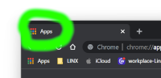

Este é um momento único !
Para escrever qualquer paragrafo, basta usar a tag <p> conteudo <p>
Você pode escrever um parágrafo de qualquer jeito, usando a tag <p> conteudo </p>
Se você precisar quebrar o texto em qualquer lugar como esse !!!
basta usar a tag <br>
Para adicionar uma linha horizontal basta usar a tag <hr>
Para adicionar uma linha horizontal basta usar a tag <hr>
para adicionar símbolos especiais basta usar os codigos do site w3schools
®
ℜ
™
▵
para acicionar emojis basta colocar o codigo do emojipedia.org , utilizando &#x antes do codigo do site, terminando com ; PONTO E VIRGULA
🤓
😀
🏀
Para adicicionar imagens, deve se levar em consideração, o tamanho e funcionalidade, a resolução, designer visual, e a qualidade (que expotarmos do gimp).
E principalmente verificar os direitos autorais das imagens.

Para adicionar fav incons basta ir ao HEAD, acima do title do seu site e solocar a seguinte tag:
<link rel="shortcut icon" href="Imagens/favicon.ico" type="image/x-icon">
Dentro de href="" coloque o arquivo no formato .ico